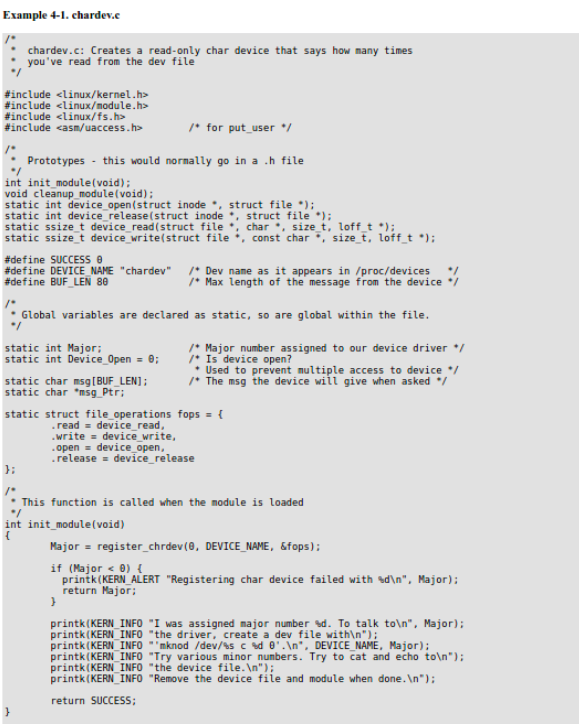

One class of module is the device driver, which provides functionality for hardware like a TV card or a serial port. On unix, each piece of hardware is represented by a file located in /dev named a device file which provides the means to communicate with the hardware. The device driver provides the communication on behalf of a user program. So the es1370.o sound card device driver might connect the /dev/sound device file to the Ensoniq IS1370 sound card. A userspace program like mp3blaster can use /dev/sound without ever knowing what kind of sound card is installed.
When you write device drivers, it’s important to make the distinction between “user space" and “kernel space".
Kernel space: Linux (which is a kernel) manages the machine's hardware in a simple and efficient manner, offering the user a simple and uniform programming interface. In the same way, the kernel, and in particular its device drivers, form a bridge or interface between the end-user/programmer and the hardware. Any subroutines or functions forming part of the kernel (modules and device drivers, for example) are considered to be part of kernel space.
User space: End-user programs, like the UNIX shell or other GUI based applications (kpresenter for example), are part of the user space.
Each device is represented in the kernel by a file structure, which is defined in linux/fs.h. Be aware that a file is a kernel level structure and never appears in a user space program. It's not the same thing as a FILE, which is defined by glibc and would never appear in a kernel space function. Also, its name is a bit misleading; it represents an abstract open `file', not a file on a disk, which is represented by a structure named inode. An instance of struct file is commonly named filp. You'll also see it refered to as struct file file. Resist the temptation.
Go ahead and look at the definition of file. Most of the entries you see, like struct dentry aren't used by device drivers, and you can ignore them. This is because drivers don't fill file directly; they only use structures contained in file which are created elsewhere.
Adding a driver to your system means registering it with the kernel. This is synonymous with assigning it a major number during the module's initialization. You do this by using the register_chrdev function, defined by linux/fs.h.
Normally, when you don't want to allow something, you return an error code (a negative number) from the function which is supposed to do it. With cleanup_module that's impossible because it's a void function. However, there's a counter which keeps track of how many processes are using your module. You can see what it's value is by looking at the 3rd field of /proc/modules. If this number isn't zero, rmmod will fail. Note that you don't have to check the counter from within cleanup_module because the check will be performed for you by the system call sys_delete_module, defined in linux/module.c. You shouldn't use this counter directly, but there are functions defined in linux/module.h which let you increase, decrease and display this counter:
try_module_get(THIS_MODULE): Increment the use count. module_put(THIS_MODULE): Decrement the use count.
The next code sample creates a char driver named chardev. You can cat its device file (or open the file with a program) and the driver will put the number of times the device file has been read from into the file. We don't support writing to the file (like echo "hi" > /dev/hello), but catch these attempts and tell the user that the operation isn't supported. Don't worry if you don't see what we do with the data we read into the buffer; we don't do much with it.
References